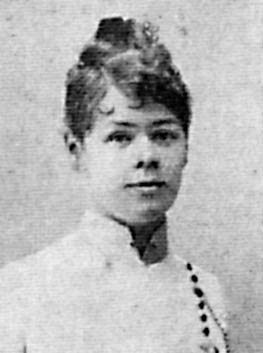
Laura Marholm
1889. Unknown photographer; reproduced in Ingvar Holm, Ola Hansson. En studie i åttitalsromantik (1957).
Sources & acknowledgements
Portraits and manuscripts, grouped by institution or digital resource.

1889. Unknown photographer; reproduced in Ingvar Holm, Ola Hansson. En studie i åttitalsromantik (1957).
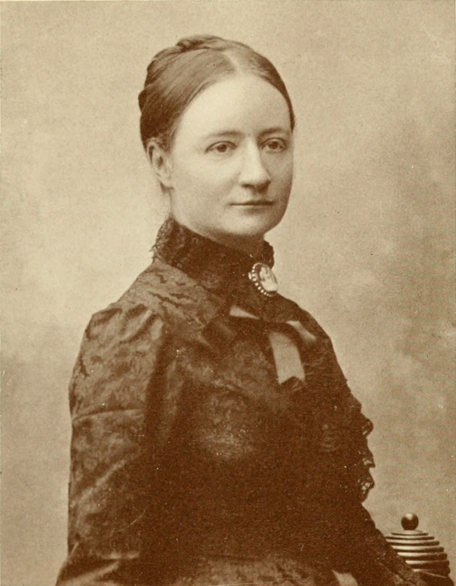
1885. A. Apelgren; reproduced in Louise Nyström-Hamilton, Ellen Key, Her Life and Her Work (1913).
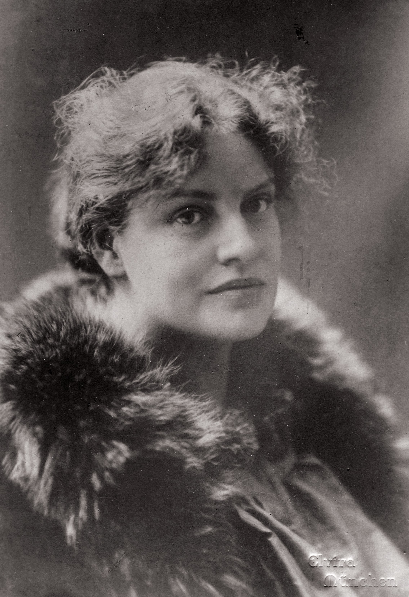
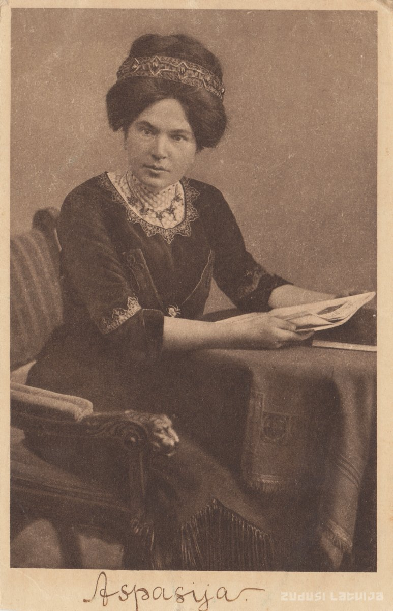
c. 1912 or earlier. Unknown photographer; source: Zudusī Latvija, object 32402.
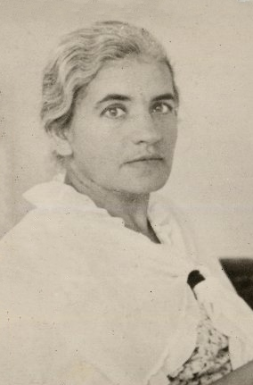
1930s. Unknown photographer; Academic Library of the University of Latvia. LABR R12274-12; Iz883-12.
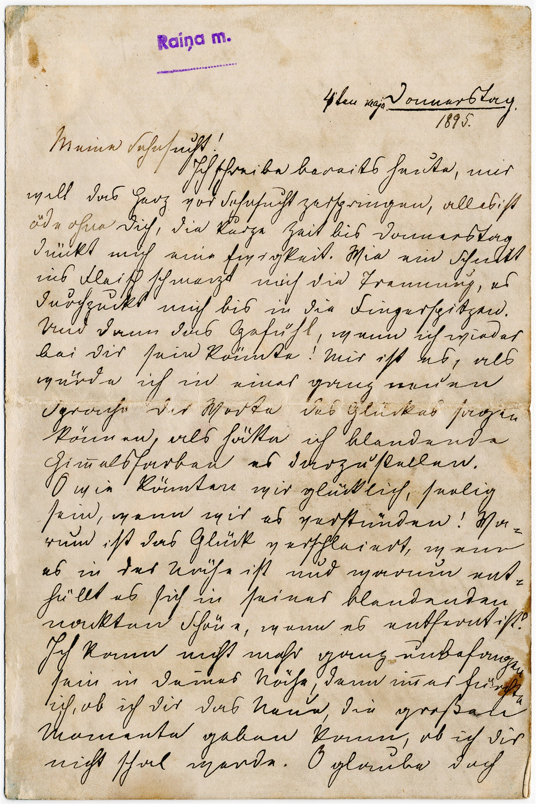
4 and 7 May 1895. Handwritten letter in German.
Literature and Music Museum · Asp. K 2/7, inv. no. 15625.
Digital image: National Library of Latvia / RUNA. Source record.
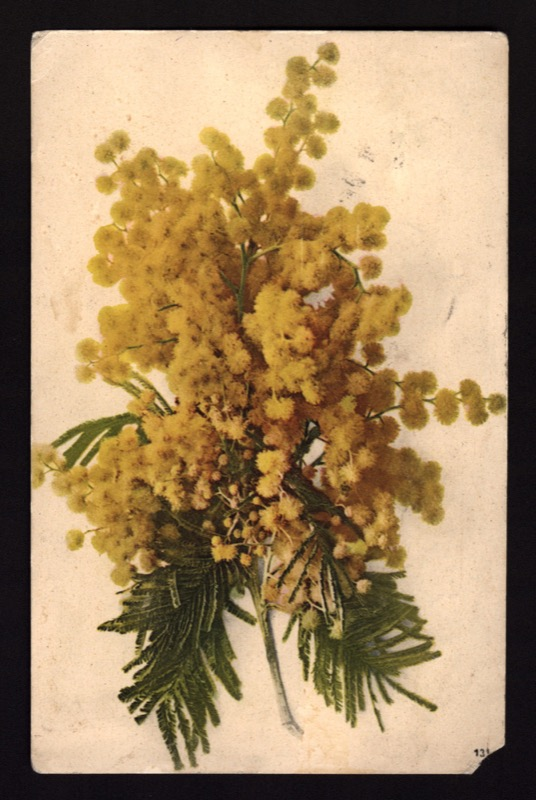
Bern, 22 November 1908. Illustrated postcard. Latvian.
Original held by Literature and Music Museum (Rakstniecības un mūzikas muzejs). Reference: RTMM 70998.
Digital images: National Library of Latvia · RUNA, Rainis un Aspazija. Source record.
Public domain; free reuse stated by the Latvian Digital Library.
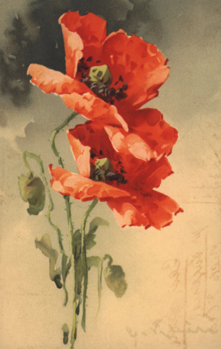
From Aspazija’s collection · Literature and Music Museum, RTMM 266242.
Digital image: Association of Memorial Museums.
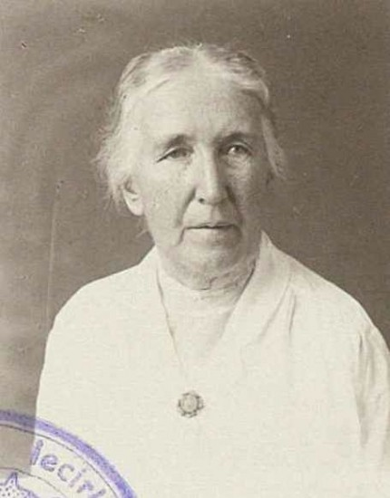
Latvian National Archives · LVVA 2996-7-39096 · 1927.
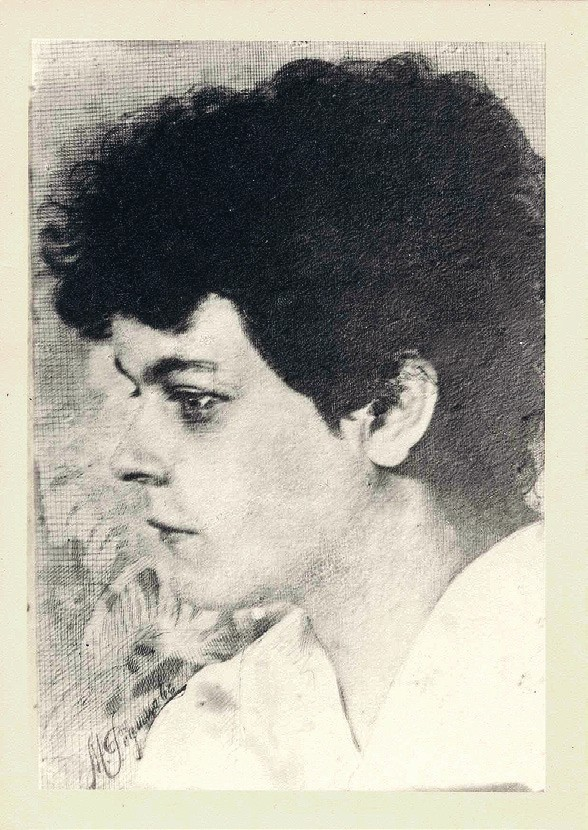
Latvian State Archive · LVA 2176-1v-243-47001. Digital source: Literatura.lv.
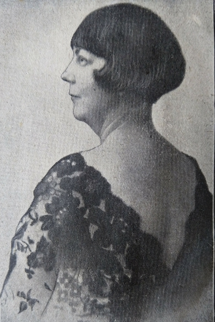
Portrait reproduced in Nach den Sternen. Gedichte (Rīga, 1930). Photographer not identified in the source record.
Digital source: Womage, Institute of Literature, Folklore and Art, University of Latvia (LU LFMI).
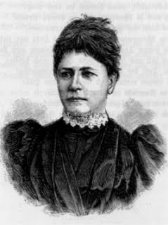
Portrait reproduced in Jeannot Emil Freiherr von Grotthuß (ed.), Das Baltische Dichterbuch: Eine Auswahl deutscher Dichtungen aus den Baltischen Provinzen Rußlands, 2nd revised edition. Reval: Verlag von Franz Kluge, 1895.
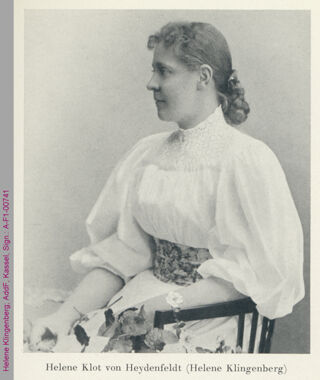
Helene Klingenberg, ca. 1890. AddF – Archiv der deutschen Frauenbewegung, Kassel · A-F1-00741. Reproduced in Lou Andreas-Salomé, Lebensrückblick (Zürich/Wiesbaden, 1951), plate p. 188a.
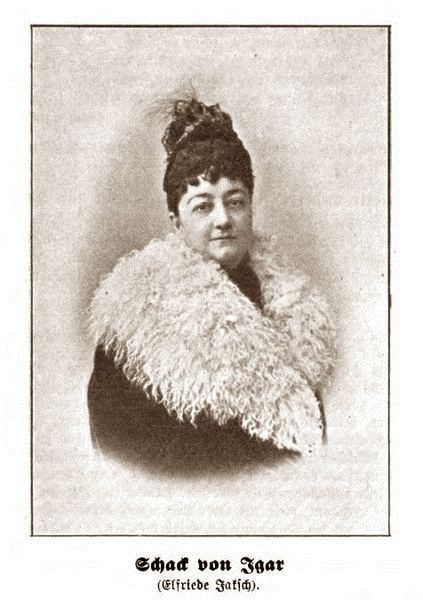
F. Müller (Riga), Goethe- und Schiller-Archiv, Klassik Stiftung Weimar, Kürschner Collection, shelfmark GSA 55/BS 1957.
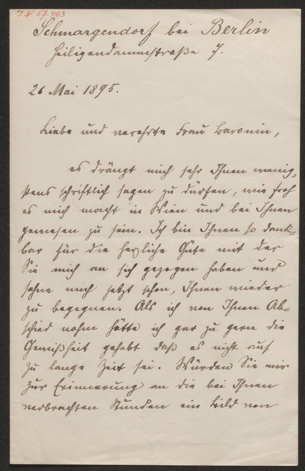
Berlin, 26 May 1895. Handwritten letter. German.
Original held by Wienbibliothek im Rathaus. Reference: H.I.N.-57463 · urn:nbn:at:AT-WBR-231276.
Digital images: Wienbibliothek im Rathaus. Source record.
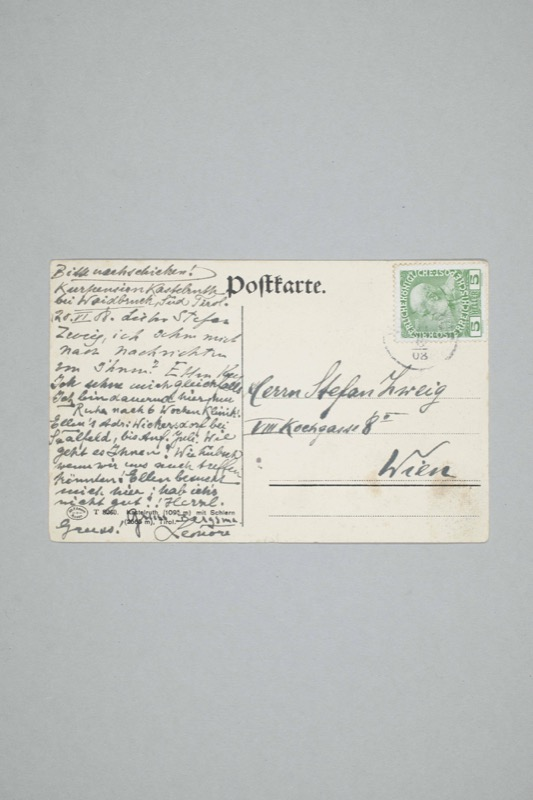
Kastelruth, Tyrol, 20 June 1908. Handwritten postcard. German.
Original held by Literaturarchiv Salzburg. Reference: SZ-SAM/AK.95.
Digital images: Literaturarchiv Salzburg · Stefan Zweig digital, GAMS, University of Graz. Source record.
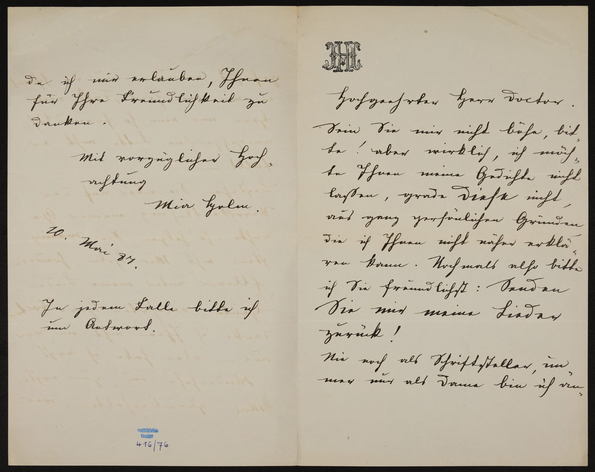
Handwritten letter. German. Monacensia im Hildebrandhaus, Münchner Stadtbibliothek · MGC B 390.
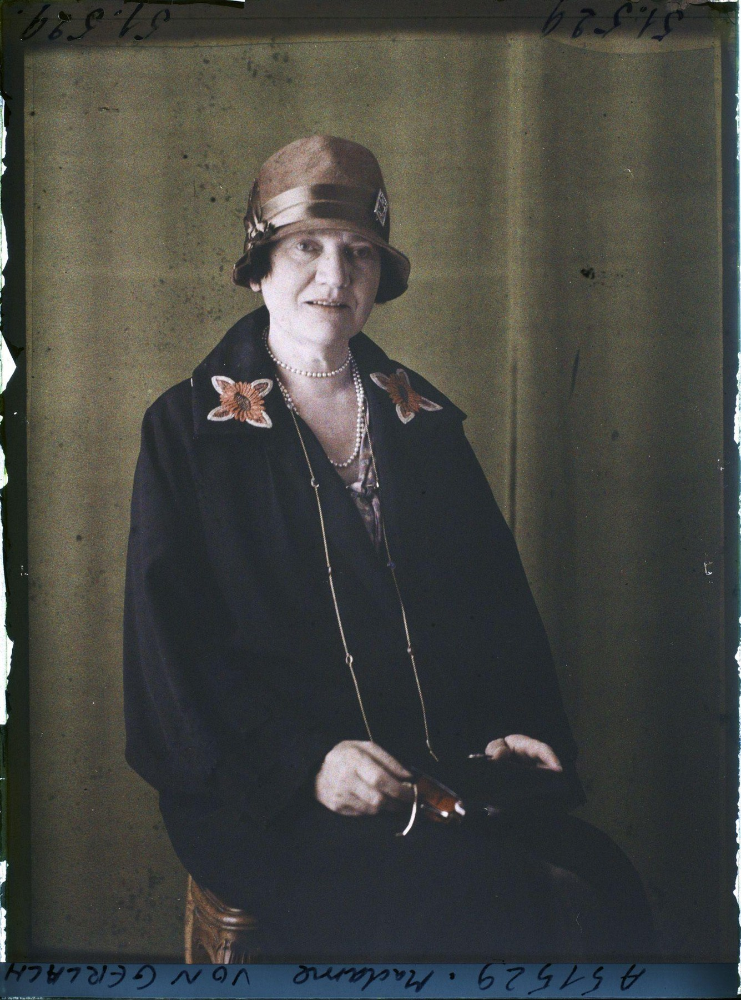
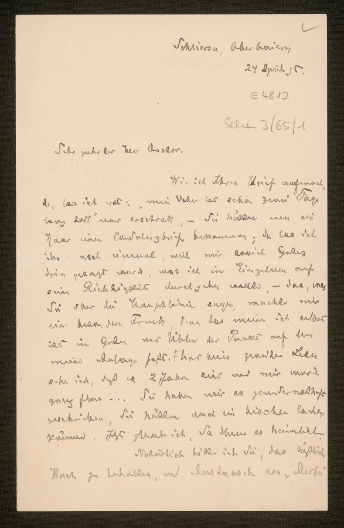
24 April 1895. Handwritten letter. German.
The map shows birthplaces, grouped when writers share a place. Positions are approximate at settlement level. Present-day borders provide orientation and do not describe historical political boundaries.
Rīga: the supplied project biographies; Elfriede Eckardt-Skalberg is additionally documented in Literatūra. Other birthplace sources: Ellen Key, SKBL; Lou Andreas-Salomé, Deutsche Biographie; Aspazija, National Library of Latvia; Elisabeth Goercke, BBLD; Gertrud von den Brincken, Deutsche Biographie; Zenta Mauriņa, Literatūra.
Map geometry: Natural Earth, public domain, 1:50m country boundaries.